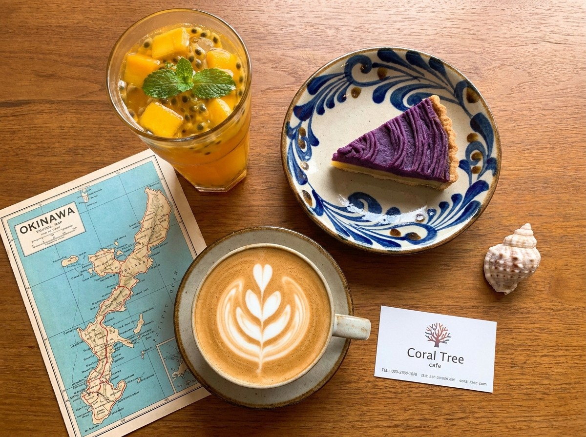

오키나와의 기억
Travel Consultant
오키나와 북부의
오키나와 북부의
바람을 싣고
저는 여행을 좋아합니다. 그래서 언젠가는 여행에 관련된 카페를 해보고 싶었습니다.
여행을 좋아하는 손님들이 와서 차와 디저트를 곁들여 먹으며 여행 정보를 얻고, 여행에 대한 이야기를 자유롭게 나눌 수 있는 곳. 저는 그곳에서 손님이 가고 싶어 하는 여행지에 대해 컨설턴트를 해주는 역할을 합니다.
해안가의 바닷물이 너무 투명해서 발 아래 모든 것이 선명하게 보입니다. 물론 물고기도요. 백사장에 이어진 해변은 수심이 얕아서, 아이들과 해수욕하기에 최적의 장소입니다. 그리고 배를 타고 나가면 멋진 산호초 섬에서 스노클링을 할 수 있는 스팟이 있습니다.